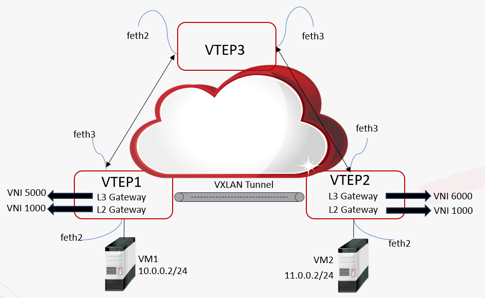

l应用场景
某企业在不同数据中心之间都拥有VM，如下图所示，VM1属于10.0.0.2/24网段，VM2属于11.0.0.2/24网段。这里VM1和VM2需要进行跨网段通信，通过在NGFW1（LTEP1）和NGFW2（VTEP2）上设置VXLAN分布式三层网关，实现跨网通讯。

l配置要点
1.配置VTEP1和VTEP2两台设备通信接口的IP地址和通信路由，实现VTEP1、VTEP2、VTEP3设备网络互通，操作详见 接口 和 路由。
2.配置VTEP1和VTEP2设备上的VXLAN网桥，并在VXLAN接口上配置地址作为三层网关使用，操作详见 VXLAN接口。
3.配置VTEP1和VTEP2设备上的业务接入端，操作详见 业务接入端。
4.配置VTEP1和VTEP2设备上的VXLAN隧道，操作详见 隧道。
5.配置VTEP1和VTEP2设备上的路由，保证VM1和VM2可互通。
6.在VM上配置路由，使VM1和VM2不同网段可互通（配置路由时，网关需配置为三层网关中对应VNI三层虚接口上的IP地址）。
l配置步骤
VTEP1 |
VTEP2 |
|---|---|
步骤1： 1）选择 ，设置“feth3”接口地址为： ØIP地址：3.3.3.3 Ø掩码：255.255.255.0 2）选择 ，设置静态路由： Ø目的地址：4.4.4.4/32 Ø网关：3.3.3.1 |
步骤1： 1）选择 ，设置“feth3”接口地址为： ØIP地址：4.4.4.4 Ø掩码：255.255.255.0 2）选择 ，设置静态路由： Ø目的地址：3.3.3.3/32 Ø网关：4.4.4.1 |
步骤2：配置网桥。 选择 。点击“添加”，VXLAN接口参数配置如下： §VXLAN网桥1 ØVNI：5000 ØIP地址：10.0.0.1/255.0.0.0 §VXLAN网桥2 ØVNI：1000 ØIP地址：100.0.0.1/255.0.0.0 |
步骤2：配置网桥。 选择 。点击“添加”，VXLAN接口参数配置如下： §VXLAN网桥1 ØVNI：6000 ØIP地址：11.0.0.1/255.0.0.0 §VXLAN网桥2 ØVNI：1000 ØIP地址：100.0.0.2/255.0.0.0 |
步骤3：配置业务接入端。 1）选择 ，设置“feth2”接口工作模式为“交换”。 2）选择 。点击“添加”，业务接入端参数配置如下： ØVIN：5000 Ø接入接口：feth2 Ø匹配规则：all |
步骤3：配置业务接入端。 1）选择 ，设置“feth2”接口工作模式为“交换”。 2）选择 。点击“添加”，业务接入端参数配置如下： ØVIN：6000 Ø接入接口：feth2 Ø匹配规则：all |
步骤4：VXLAN隧道配置。 选择 。点击“添加”，隧道参数配置如下： ØVNI：1000 Ø本地地址：3.3.3.3 Ø远程地址：4.4.4.4 Ø出接口：feth3 |
步骤4：VXLAN隧道配置。 选择 。点击“添加”，隧道参数配置如下： ØVNI：1000 Ø本地地址：4.4.4.4 Ø远程地址：3.3.3.3 Ø出接口：feth3 |
步骤5：配置隧道两端VM1和VM2可达的路由 选择 。 点击“添加”，静态路由参数配置如下（网关配置为NVI1000隧道对端虚接口的IP地址）： Ø目标网络：11.0.0.2/32 Ø网关：100.0.0.2 |
步骤5：配置隧道两端VM1和VM2可达的路由 选择 。 点击“添加”，静态路由参数配置如下（网关配置为NVI1000隧道对端虚接口的IP地址）： Ø目标网络：10.0.0.2/32 Ø网关：100.0.0.1 |
步骤6：配置VM1和VM2不同网段可互达路由（在VM上配置，网关配置为VTEP1中NVI5000三层虚接口的IP地址） Ø目标网络：11.0.0.0/8 Ø网关：10.0.0.1 |
步骤6：配置VM1和VM2不同网段可互达路由（在VM上配置，网关配置为VTEP2中NVI6000三层虚接口的IP地址） Ø目标网络：10.0.0.0/8 Ø网关：11.0.0.1 |